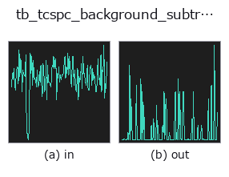

typed op• Data kinds: counts → counts
• Call: fullseye.apply(img, "tb_tcspc_background_subtract", a=0.5, b=0.5) (2-D model = एक image + दो scalar knobs a,b∈[0,1])

*Figure synthetic 128×128 input पर सच में चलाकर मिला output है। बाईं ओर input, दाईं ओर output। Point clouds ऊपर से देखे गए scatter के रूप में (brightness = z), 1-D series line के रूप में, volumes z दिशा में maximum-intensity projection के रूप में, videos बीच के frame के रूप में, complex images amplitude के रूप में, और जो return values चित्र नहीं बन सकते वे स्वयं values के रूप में दिखाए जाते हैं।*
*Knob a output नहीं बदलता (मापा गया: 0.1 / 0.5 / 0.9 पर एक जैसा)।*
Knob b को बदलकर (0.1 / 0.5 / 0.9, दूसरा knob default पर):
▸ tb_tcspc_background_subtract: knob b को बदलने का figure (docs site)
Stages (पहले आने वाले ops → यह op, बाएँ से क्रम में):
▸ tb_tcspc_background_subtract: stages का figure (docs site)
दूसरी images पर भी (synthetic scene / photo / coins। ऊपर की row में inputs, नीचे की row में उनके outputs। Knobs default पर):
▸ tb_tcspc_background_subtract: दूसरी images पर output (docs site)
arrival-time histogram से ambient-light / dark-count floor हटाता है।
> नीचे का विस्तृत विवरण मूल text में है — सारांश और headings का अनुवाद हो चुका है।
Outdoors, most of what a dToF sensor counts is sunlight: a roughly uniform pedestal under the return pulse. It biases the centroid toward the middle of the window (a floor of b per bin pulls the first moment toward window/2) and it inflates the apparent signal, so it is removed before any depth or lifetime estimate.
The level is estimated by *method* and then subtracted (the sign trap:
the result is hist - level, clipped at 0, never hist + level):
• "median" (default) — the median of every bin. Robust while the pulse occupies well under half the window, which is the normal dToF case.
• "leading" — the mean of the first *leading_bins* bins, the classical choice when the pulse is known to arrive late (a far target).
• "trailing" — the mean of the last *leading_bins* bins, for fluorescence decays where the tail is background.
• "quantile" — the given *quantile* of all bins, for tuning by hand.
*leading_bins* defaults to None = min(8, len(hist)), so the default call works on a short histogram instead of raising over a constant nobody chose (a fixed default of 8 made method="leading" fail on any histogram with fewer than 8 bins).
*scale* multiplies the estimated level before subtraction (scale=1.2 for a deliberately aggressive removal). Clipping at 0 means the result is a valid non-negative histogram that the rest of this module will accept.
Ground truth: on a noiseless histogram with a known flat pedestal of 20 counts/bin under a 5000-photon pulse covering 5.1% of the window, the median estimate recovers 20.000000 and the returned histogram equals the pedestal- free pulse exactly (measured area error 0.0, pinned in the tests).
Returns a float64 1-D histogram of the same length as *hist*.
Raises ValueError: negative, non-finite or non-1-D *hist*, an unknown *method*, a *leading_bins* outside [1, len(hist)], a *quantile* outside [0, 1], and a negative *scale*.
Typed bridge of the photon op tcspc_background_subtract into the 2-D evolution registry: the same implementation, called under the op(v, a, b) convention. a drives quantile (default 0.5) and b drives scale (default 1).
• Sample data catalog (DL URL / license) — 2-D के लिए skimage.data (BSD/public) + synthetic, 3-D के लिए real data sources (Stanford/PDS आदि) के DL URL।
• Operators का स्रोत और संदर्भ — इस op family के मूल research/methods के स्रोत।
नीचे का program सच में चलता है, यह जाँचा गया है (figure वाला ही input)। Studio की help में यह block buttons बन जाता है, जिनसे इसे वहीं load करके चलाया जा सकता है।
img_to_counts 0.50 0.50 tb_tcspc_background_subtract 0.50 0.50
▸ यह pipeline load करें · Load करके चलाएँ
नीचे के उदाहरण मूल ledger op tcspc_background_subtract को call करते हैं। यह bridge op वही implementation है, बस fn(v, a, b) convention के अनुसार ढाला गया है, इसलिए व्यवहार वैसा ही लागू होता है (केवल call का रूप अलग है)।
• photon_timeresolved — py -3.11 examples/photon_timeresolved.py
• poc_dtof_ranging — py -3.11 examples/poc_dtof_ranging.py
counts को input के रूप में लेते हैं)identity · tb_spad_deadtime_apply · tb_spad_deadtime_correct · tb_tcspc_coates_correct · tb_tcspc_irf_convolve · tb_dtof_depth · tb_countrate_to_counts · tb_counts_to_countrate
typed)tb_points_to_voxel · tb_estimate_point_normals · tb_iss_keypoints · tb_project_points · tb_render_point_depth · tb_statistical_outlier_removal · tb_radius_outlier_removal · tb_voxel_grid_downsample
*Provenance: ops.py — 2D operator registry. यह per-op note tools/opdocs.py md से अपने-आप generate होता है (हाथ से edit न करें)।*
© 2026 Kazufumi Furuse — Fullseye operator documentation. Licensed under Apache-2.0.